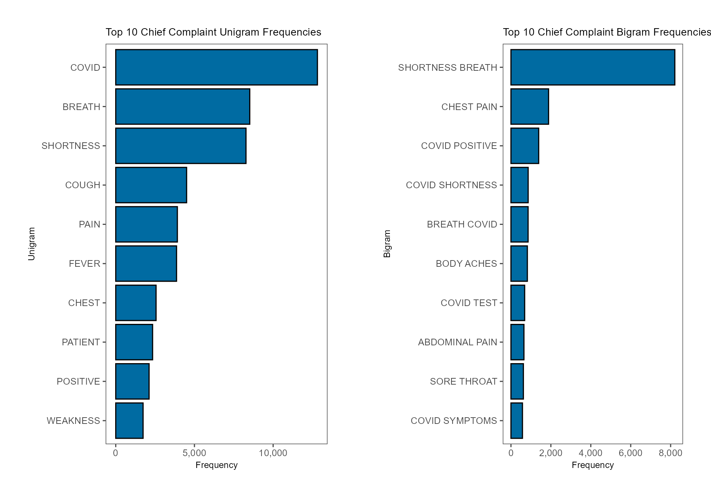
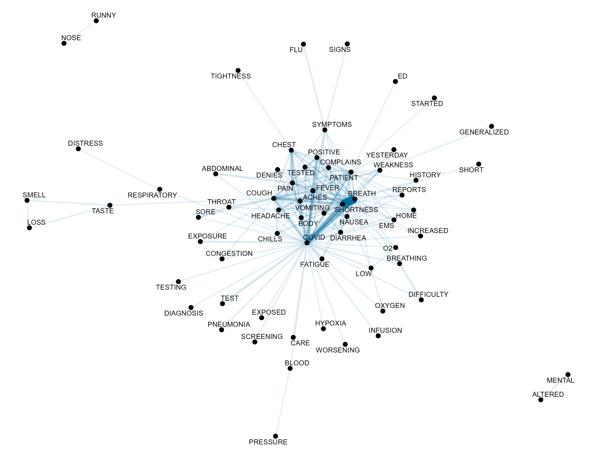
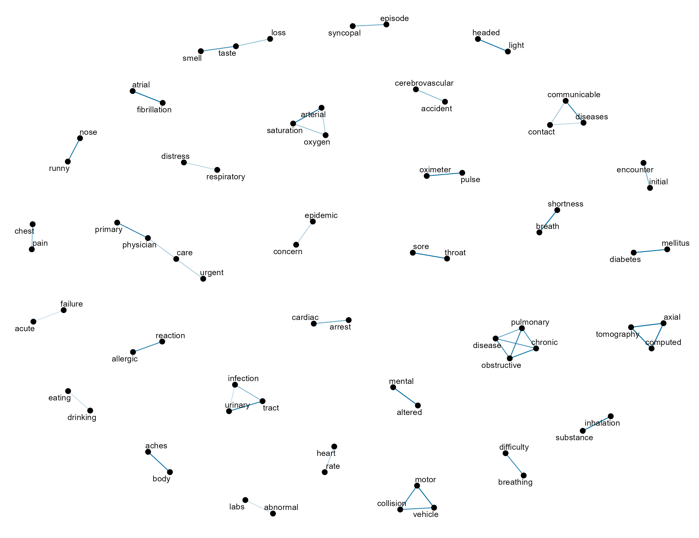

Introduction
In this tutorial, we describe how to perform basic text mining using line-level data from NSSP-ESSENCE. This example uses line level data details from the Chief Complaint Query Validation (CCQV) data source for the CDC Coronavirus-DD definition, limiting to ED visits (Has been Emergency = “Yes”).
The CCQV data source includes the chief complaint and discharge diagnosis fields, and does not include facility location, patient location, or other demographic information. This data source was created with the NSSP Community of Practice (CoP) so that users can test and create new syndrome categories using a large corpus of chief complaint and diagnosis code data that includes more variation than would be present in any one site. Some sites have opted out of contributing their data to the Query Validation data source, including Arizona, Idaho, Illinois, Marion County, Indiana, Massachusetts, North Dakota, and Ohio.
We start this tutorial by loading the Rnssp package and
all other necessary packages.
library(Rnssp)
library(tidyr)
library(widyr)
library(tidytext)
library(ggplot2)
library(ggthemes)
library(ggpubr)
library(forcats)
library(igraph)
library(ggraph)Next, we create an NSSP user profile.
# Creating an ESSENCE user profile
myProfile <- create_profile()
# save profile object to file for future use
# save(myProfile, file = "myProfile.rda") # saveRDS(myProfile, "myProfile.rds")
# Load profile object
# load("myProfile.rda") # myProfile <- readRDS("myProfile.rds")The above code needs to be executed only once. Upon execution, it prompts the user to provide his username and password.
Alternatively, the myProfile object can be saved on file
as an .RData (.rda) or .rds file
and loaded to automate Rmarkdown reports generation.
Data Pull from NSSP-ESSENCE
We now use the myProfile object to authenticate to
NSSP-ESSENCE and pull the data.
url <- "https://essence2.syndromicsurveillance.org/nssp_essence/api/dataDetails/csv?endDate=31Dec2020&ccddCategory=cdc%20coronavirus-dd%20v1&timeResolution=weekly&hasBeenE=1&percentParam=noPercent&userId=2362&datasource=va_erccdd&aqtTarget=DataDetails&detector=nodetectordetector&startDate=30Dec2020"
# Data Pull from NSSP-ESSENCE
api_data <- get_essence_data(url) # or get_api_data(url, fromCSV = TRUE)
# glimpse(api_data)We perform a standard series of text cleansing and pre-processing operations to remove meaningless patterns, common stop words, standardize free-text, and returns a clean version of the original dataframe that is ideal for summarizing a large corpus.
.stopwords <- paste0(
"\\bOF\\b|\\bOR\\b|\\bWITH\\b|\\bFOR\\b|\\bON\\b|\\bLEFT\\b|\\bRIGHT\\b|",
"\\bPT\\b|\\bUNSPECIFIED\\b|\\bSTATUS\\b|\\bIN\\b|\\bHX\\b|//bDAYS\\b|\\bAGO\\b|\\bUNKNOWN",
"\\b|\\bTNOTE\\b|\\b2015\\b|\\b2016\\b|\\b2017\\b|\\b2018\\b|\\bEND\\b|\\bNON\\b|\\bSMALL\\b|",
"\\bCAUSES\\b|\\bOLD\\b|\\bBY\\b|\\bFROM\\b|\\bLARGE\\b|\\bPOSSIBLE\\b|\\bCAUSE\\b|\\bASSOCIATED",
"\\b|\\bFOLLOWING\\b|\\bNOT\\b|\\bPROBLEMS\\b|\\bGENERAL\\b|\\bPROBABLY\\b|\\bSPECIFIED\\b|\\bHIGH",
"\\b|\\bFURTHER\\b|\\bAT\\b|\\bFOR\\b|\\bWITHOUT\\b|\\bOTHER\\b|\\bOTHERWISE\\b|\\bSTATE\\b|\\bUSE",
"\\b|\\bAS\\b|\\bNO\\b|\\bVIA\\b|\\bBACK\\b|\\bAFTER\\b|\\bLIKE\\b|\\bALL\\b|\\bNEW\\b|\\bBUT\\b|",
"\\bBE\\|\\bTO\\b|\\bTHIS\\b|\\bTHAT\\b|\\bNA\\b|\\bIS\\b|\\bHAS\\b|\\bTHE\\b|\\bHAVING\\b|\\b2019\\b|",
"\\b2020\\b|\\bTO\\b"
)
.pattern1 <- "[A-TV-Z][0-9][0-9AB]\\.?[0-9]{0,2}|PG[0-9]{0,3}"
.pattern2 <- "[[:cntrl:]]|<BR>|[#?!?.'+)(:=@%]"
.pattern3 <- "\\b[0-9]{1}\\b|\\b[0-9]{2}\\b|\\bNA\\b|\\|"
.pattern4 <- "[;/,\\\\*-]|([a-zA-Z])/([\\d])|([\\d])/([a-zA-Z])|([a-zA-Z])/([a-zA-Z])|([\\d])/([\\d])"
.pattern5 <- "\\b[A-Za-z]{2,20}\\b"
data <- api_data %>%
janitor::clean_names() %>%
data.table() %>%
mutate(
chief_complaint_parsed = chief_complaint_parsed %>%
str_remove_all(.stopwords) %>%
str_remove_all(.pattern1) %>%
str_remove_all("CHIEF COMPLAINT|SEE CHIEF") %>%
str_remove_all(.pattern2) %>%
str_remove_all(.pattern3) %>%
str_remove_all(.pattern4) %>%
str_squish() %>%
ifelse(nchar(.) <= 3, "", .) %>%
str_replace_na(""),
discharge_diagnosis = discharge_diagnosis %>%
str_remove_all(.pattern2) %>%
str_remove_all(.pattern3) %>%
str_replace_all(.pattern4, " ") %>%
str_squish() %>%
str_remove_all(.pattern5) %>%
ifelse(nchar(.) <= 2, "", .) %>%
str_replace_na(""),
ccdd2 = str_c(chief_complaint_parsed, discharge_diagnosis, sep = " "),
chief_complaint_parsed = vapply(
lapply(str_split(chief_complaint_parsed, " "), unique),
paste, character(1L), collapse = " "
),
discharge_diagnosis = vapply(
lapply(str_split(discharge_diagnosis, " "), unique),
paste, character(1L), collapse = " "
),
ccdd2 = vapply(lapply(str_split(ccdd2, " "), unique), paste, character(1L), collapse = " "),
ccdd2 = str_squish(ccdd2)
) %>%
tibble::as_tibble() %>%
mutate(linenumber = row_number())Unnesting of Tokens
After cleaning and preparing free-text fields, the next step in most
natural language processing tasks is tokenization. Tokenization is the
process of partitioning sentences, paragraphs, or documents into smaller
units such as individual words (unigrams) or contiguous sequences of n
words (n-grams). These smaller units are referred to as tokens and
provide a feature-based representation of text. The
unnest_tokens function from tidytext splits a
column into tokens, resulting in a one-token-per-row dataframe. The
arguments in unnest_tokens include the following:
- output: Name of column containing unnested tokens
- input: Name of column containing text to be split into tokens
- token: Unit for tokenizing. By default, this is set to “words”, resulting in unnesting of unigrams. Additional options include ngrams, skip_ngrams, sentences, lines, and paragraphs. In order to unnest ngrams, an additional argument of n is required to specify the length of word sequences(i.e. n = 2 for bigrams, and n = 3 for trigrams).
cc_unigrams <- data %>%
unnest_tokens(output = word, input = chief_complaint_parsed, token = "words") %>%
filter(!is.na(word)) %>%
anti_join(stop_words)
cc_bigrams <- data %>%
unnest_tokens(output = bigram, input = chief_complaint_parsed,
token = "ngrams", n = 2) %>%
filter(!is.na(bigram)) %>%
separate(bigram, into = c("word1", "word2"), sep = " ",
remove = FALSE) %>%
filter(!word1 %in% stop_words) %>%
filter(!word2 %in% stop_words)
cc_trigrams <- data %>%
unnest_tokens(output = trigram, input = chief_complaint_parsed,
token = "ngrams", n = 3) %>%
separate(trigram, into = c("word1", "word2", "word3"), sep = " ", remove = FALSE) %>%
filter(!word1 %in% stop_words) %>%
filter(!word2 %in% stop_words) %>%
filter(!word3 %in% stop_words)n-gram Frequencies
To summarize the top 10 chief complaint unigram and bigram
frequencies, we can use the count and top_n
functions from dplyr and visualize the results in
horizontal bar charts. In order for the bars to be in descending order,
we need to use fct_reorder from forcats to
factor the n-grams with the levels being the frequencies themselves. By
default, ggplot will arrange the bars in alphabetical order
unless the categorical variable is factored. After creating two separate
ggplot objects, we can use ggarrange to
arrange the plots into a horizontal grid.
pal <- economist_pal()(2)
cc_unigram_freq <- cc_unigrams %>%
count(word, sort = TRUE) %>%
ungroup() %>%
top_n(10) %>%
mutate(
word = str_to_upper(word),
word = fct_reorder(word, n)
) %>%
ggplot(aes(x = word, y = n)) +
geom_col(show.legend = FALSE, color = "black", fill = pal[1]) +
scale_y_continuous(labels = scales::comma) +
theme_few() +
labs(title = "Top 10 Chief Complaint Unigram Frequencies",
x = "Unigram",
y = "Frequency") +
coord_flip() +
theme(plot.margin = unit(c(1, 1, 1, 1), "cm"),
title = element_text(size = 9))
cc_bigram_freq <- cc_bigrams %>%
count(bigram, sort = TRUE) %>%
ungroup() %>%
top_n(10) %>%
mutate(
bigram = str_to_upper(bigram),
bigram = fct_reorder(bigram, n)
) %>%
ggplot(aes(x = bigram, y = n)) +
geom_col(show.legend = FALSE, color = "black", fill = pal[1]) +
scale_y_continuous(labels = scales::comma) +
theme_few() +
labs(title = "Top 10 Chief Complaint Bigram Frequencies",
x = "Bigram",
y = "Frequency") +
coord_flip() +
theme(plot.margin = unit(c(1, 1, 1, 1), "cm"),
title = element_text(size = 9))
ggarrange(cc_unigram_freq, cc_bigram_freq, nrow = 1, ncol = 2)
Chief Complaint Term Co-occurrence and Correlation
Chief Complaint Term Co-occurrence Network Graph
cc_cooccurrence_net <- cc_unigrams %>%
pairwise_count(word, linenumber, sort = TRUE, upper = FALSE) %>%
top_n(200) %>%
slice(1:200) %>%
mutate(item1 = toupper(item1),
item2 = toupper(item2)) %>%
graph_from_data_frame()
ggraph(cc_cooccurrence_net, layout = "fr") +
geom_edge_link(aes(edge_alpha = n, edge_width = n), edge_colour = pal[1],
show.legend = FALSE) +
geom_node_point(size = 3) +
geom_node_text(aes(label = name), repel = TRUE,
point.padding = unit(0.2, "lines")) +
theme_void() 
Pearson Pairwise Correlation Chief Complaint Network Graph
While co-occurrence provides a metric of how frequently two terms
co-occurred in the same chief complaint, pairwise_cor from
widyr provides a measure of correlation between terms.
Namely, pairwise_cor computes the Phi Coefficient between
two words,
and
,
and is defined as
In this context,
- is the number of chief complaints containing both and
- is the number of chief complaints not containing both and
- is the number of chief complaints containing and not
- is the number of chief complaints containing and not
cc_correlation_net <- cc_unigrams %>%
group_by(word) %>%
filter(n() >= 20) %>%
pairwise_cor(word, linenumber, sort = TRUE) %>%
filter(correlation > 0.5) %>%
graph_from_data_frame()
ggraph(cc_correlation_net, layout = "fr") +
geom_edge_link(aes(edge_alpha = correlation), edge_colour = pal[1],
show.legend = FALSE) +
geom_node_point(size = 3) +
geom_node_text(aes(label = name), repel = TRUE) +
theme_void()